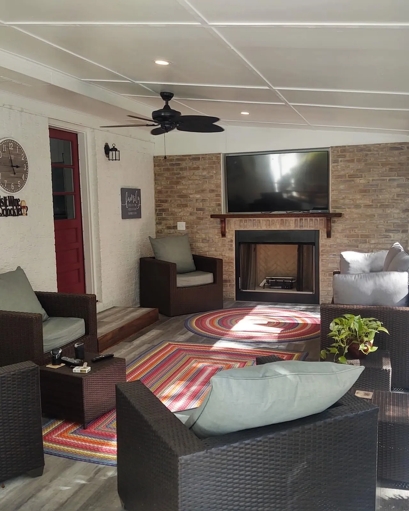

Outdoor Fireplaces and Custom Fire Pits in Charleston, SC

Built In-House, From the Footing to the Flue
A fire feature is the thing that decides whether a backyard gets used in November. Everything else is for the summer.
We build outdoor fireplaces and fire pits across Charleston, Mount Pleasant and Summerville. Doug and Zach Cramer do the site visits and the design themselves, and one of them is on the job every day until it’s finished. Gas, electrical and the permits are handled in-house, so there’s no second contractor to line up.
Fireplace or Fire Pit: Which One?
Both give you heat and both get used. The honest answer comes down to how much room you have.
- A fire pit suits a smaller yard. It works best sitting toward the middle of the patio, where people can pull chairs around all sides of it.
- A fireplace makes more of a statement if you have the space. It can double as a screen wall where you want privacy, and it works well built into a pavilion.
| Fire pit, simple kit | from about $1,000 |
|---|---|
| Fire pit, custom in higher-end materials | more, on material and size |
| Outdoor fireplace, cheap kit | from about $8,000 |
| Outdoor fireplace, custom build | $20,000+ |
What moves a fireplace price is size, height, the material it’s finished in, and gas against wood burning. A fire pit is the cheapest way to get fire into a backyard, which is why it’s where most people start.
Showcasing our Recent Works
Explore a selection of our recent projects that highlight our expertise, craftsmanship, and attention to detail.
 1 / 6
1 / 6 2 / 6
2 / 6 3 / 6
3 / 6 4 / 6
4 / 6 5 / 6
5 / 6 6 / 6
6 / 6
Gas or Wood, and Why We Fit a Blower Either Way
Gas is the convenient one. You turn it on, and there’s almost nothing to maintain.
Wood burning is great for people who want the experience — setting the fire, burning the logs. It costs more, because it needs a real chimney, and it asks more of you afterwards.
Wood also has to sit further from the house. In the City of Charleston that’s 25 feet for a wood-burning fire pit where the patio is close in, and gas can go nearer — so on a smaller lot the fuel often gets decided by the setback rather than by preference.
Whichever you pick, put a blower in it. Without one you get a fire you can look at rather than a fire you can feel, because the heat goes straight up the chimney. A blower pushes the hot air out into the space, which is what actually makes the fireplace warm where people are sitting. It’s a small part of the budget and it’s the difference between a feature and a heat source.
Stone, Stucco, Brick — or Something Smoother
Most of what we build is stone, stucco or brick, and which one you pick is mostly about matching the house.
We also offer microcement and specialised lime plasters as finishes. They give a smooth, modern surface rather than a textured one, and they work just as well on an outdoor kitchen — so if you want the fireplace and the kitchen to read as one piece of work, that’s the way to do it.

Summerville Fire Bowls Are Not Fire Pits
Worth separating these, because they get lumped together and they do different jobs. Fire bowls sit on pedestals, usually in pairs, and they’re a design feature — something the eye lands on. A fire pit is something people sit around.
On this Summerville pool we built the stone pedestals with a quartzite countertop, with a door in the side to store the propane tank so there’s no bottle sitting out by the pool. The bowls sit on top.
Built-In or Freestanding, and Where It Goes
A built-in is ideal if you have the room. Plenty of people don’t, and would rather have a freestanding pit they can move out of the way so the patio can be used for other things when the fire isn’t lit. That’s a real advantage, not a compromise — a patio that only works as a fire pit surround is a patio you use less.
How Far From the House?
There is a number, and it depends on what you’re burning. In the City of Charleston the ordinance is 25 feet for a wood-burning fire pit where the patio sits close to the house. Gas can go closer.
That single line decides a lot of small-lot projects. If there isn’t 25 feet to give — and on plenty of Charleston lots there isn’t — gas isn’t a compromise, it’s the thing that makes a fire pit possible at all. Clearances are set locally, so the number can differ from one municipality to the next; we check what applies to your address before anything gets designed around it.
Past the code minimum, placement is about flow and how you actually use the yard: where people walk, where they sit, and what else the space has to do.
Smoke isn’t usually a problem in the open. It becomes one under a structure — and there you need a chimney. That’s the single thing people get wrong when they decide to put a wood fire under a roof after the roof is already up.
How We Build Yours
- Free consultation at your home. We look at the space, how you’ll use it and what budget you’re comfortable with. Free anywhere around Charleston, Mount Pleasant and Summerville; farther out, like Bluffton or Kiawah Island, there’s a trip charge.
- Budget and design. Drawings, with optional 3D renderings at an additional cost.
- Permits, gas and electrical. All in-house, along with the chimney if it’s burning wood.
- Build and finish. Stone, stucco, brick, microcement or lime plaster, with one of us on site throughout.
Fire features pair naturally with paver patios, pavilions, outdoor kitchens, retaining walls and landscape lighting. Everything is backed by our 1-year workmanship warranty, and Cramers is a licensed residential builder and insured.
Areas We Serve
Cramers Landscaping provides its services throughout:
We build outdoor fireplaces and fire pits in Charleston, SC throughout Charleston County, including Charleston, Mount Pleasant, West Ashley, Summerville, Folly Beach, and Sullivan’s Island.
- Charleston, SC
- Mount Pleasant, SC
- Isle of Palms, SC
- North Charleston, SC
- James Island, SC
- West Ashley, SC
- Kiawah Island, SC
- Summerville, SC
- Daniel Island, SC
- Johns Island, SC
Frequently Asked Questions
How much does an outdoor fireplace cost?
A cheap fireplace kit starts around $8,000. Custom builds run $20,000 and up. What moves the number is size, height, the material it is finished in, and whether it burns gas or wood — wood costs more because it needs a real chimney.
How much does a fire pit cost?
A fire pit can be as cheap as $1,000 for a simple kit. Custom ones in higher-end materials cost more. It is the least expensive way to get fire into a backyard, which is why it is where most people start.
Should I get an outdoor fireplace or a fire pit?
Both give you heat and both get used. A fire pit suits a smaller yard, and it works best sitting toward the middle of the patio so people can gather around it. If you have the space, a fireplace makes more of a statement, it can double as a screen wall for privacy, and it works well built into a pavilion.
Gas or wood burning?
Gas is the low-maintenance option and it is more convenient — you turn it on. Wood burning is great if you want the experience of setting the fire and burning the logs, but it costs more because it needs a real chimney, and it is higher maintenance. Either way we would put a blower in it.
Why does an outdoor fireplace need a blower?
Without one you get a fire you can look at rather than a fire you can feel. A blower pushes the hot air out into the space instead of letting it go up the chimney, which is what actually makes the fireplace warm where people are sitting. We use one on gas and wood builds alike.
What are outdoor fireplaces built out of?
Stone, stucco or brick. We also offer microcement and specialised lime plasters as finishes, which give a smooth, modern look and work just as well on an outdoor kitchen if you want the two to match.
Built-in fire pit or freestanding?
A built-in is ideal if you have the space for it. Plenty of people do not, and prefer a freestanding pit they can move out of the way so the patio can be used for other things when the fire is not lit. That is a real advantage, not a compromise.
Are fire bowls the same as a fire pit?
No, they are a different thing. Fire bowls sit on pedestals, usually in pairs, and they are a design feature rather than something you gather around. On a Summerville pool we built the stone pedestals with a quartzite countertop and a door for the propane tank, with the bowls on top.
How far should a fire pit be from the house?
In the City of Charleston the ordinance is 25 feet for a wood-burning fire pit where the patio sits near the house. Gas can go closer, which is often what makes a fire pit possible at all on a tighter lot. Clearances are set locally, so the number can differ from one municipality to the next, and we confirm what applies to your address before we design around it. Beyond the code minimum it is about flow and how you use the yard — where people walk, where they sit, and what else the patio has to do.
Can I have a wood-burning fire pit on a small lot?
Often not where you would want it. The City of Charleston ordinance is 25 feet from the house for wood burning when the patio is close in, and on a small lot there is rarely 25 feet to give. Gas can sit closer, so on a tight lot gas is usually the answer rather than a compromise. We check the distance on the walkthrough before anything gets designed.
Can you put a fireplace inside a pavilion?
Yes, and it is one of the better places for one — it anchors the structure and gives the space a focal point. If it burns wood under a roof it needs a chimney, which is part of why wood costs more than gas.
Get in Touch Ready to Transform Your Landscape?
If you’re searching for a landscaping company in Charleston that delivers expertise, reliability, and long-term value, Cramers Landscaping is here to help. We offer free consultations and custom project quotes tailored to your needs.
Location
9153 Markleys Grove Blvd, Summerville, SC
Phone
Hours
Monday – Friday: 8:00 AM – 5:00 PM
Saturday: 9:00 AM – 2:00 PM
Sunday: Closed